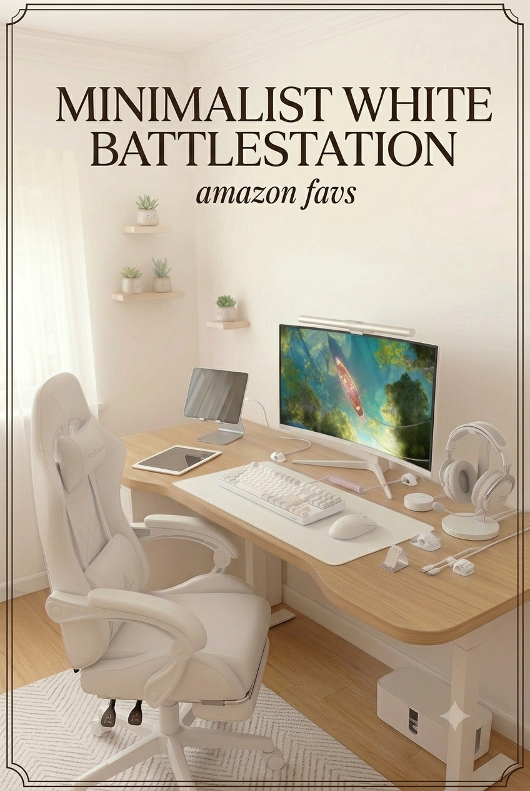
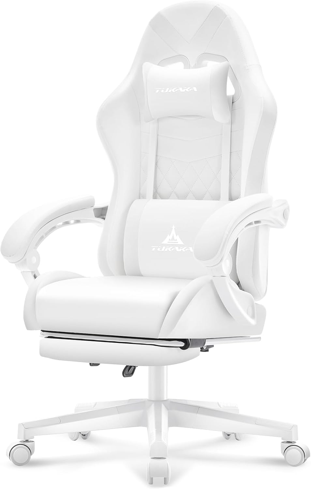
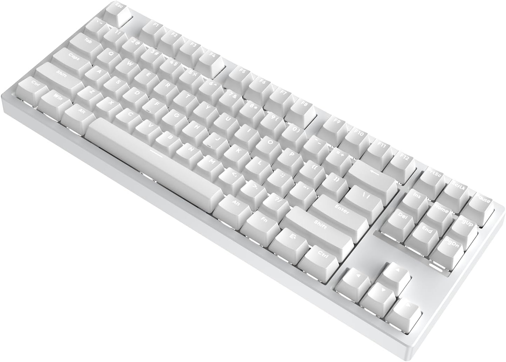
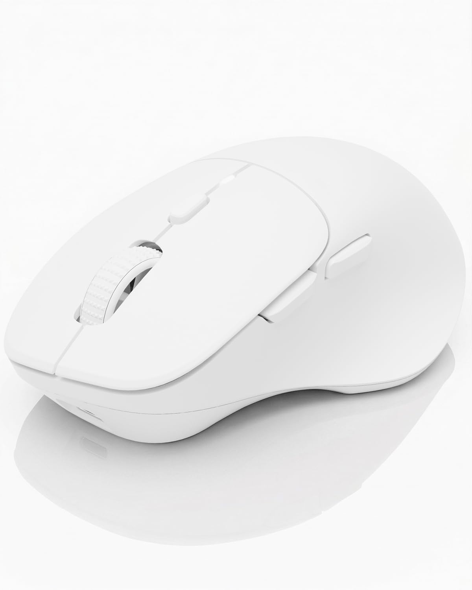
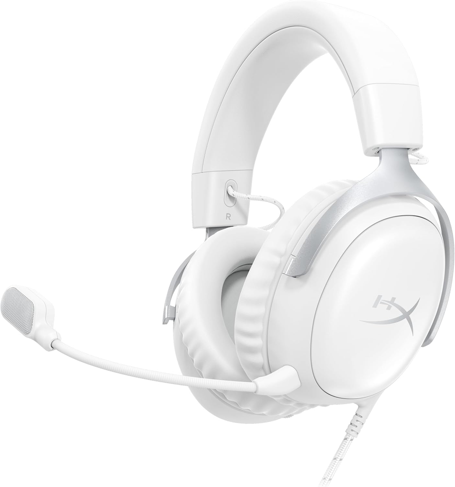
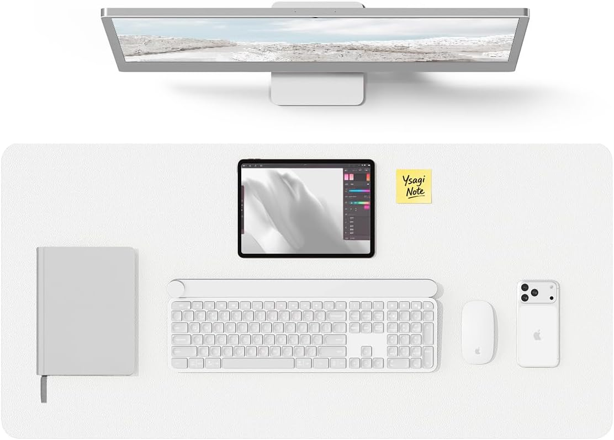
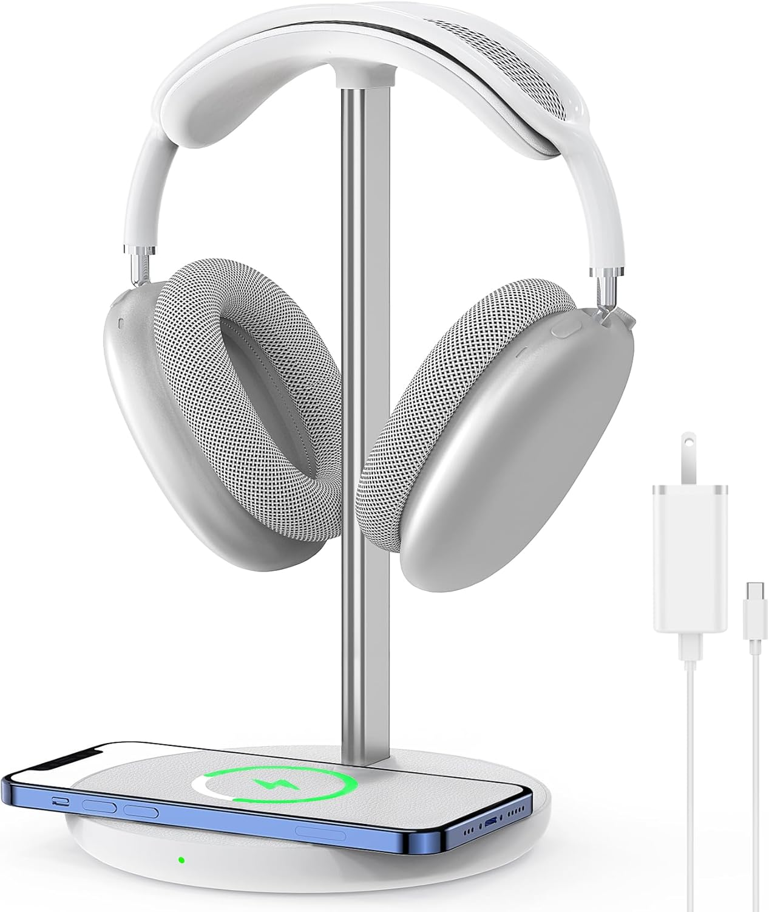
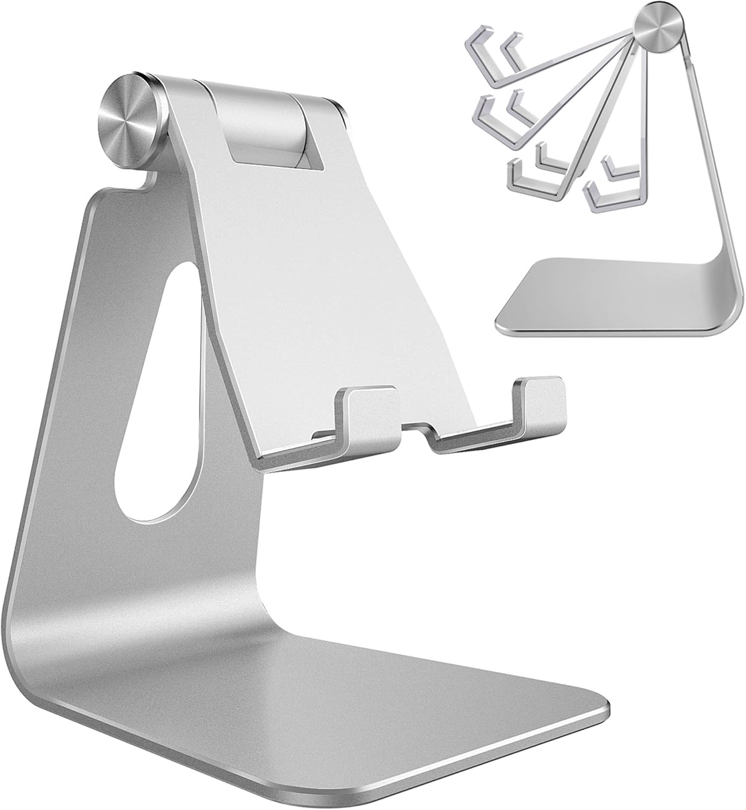
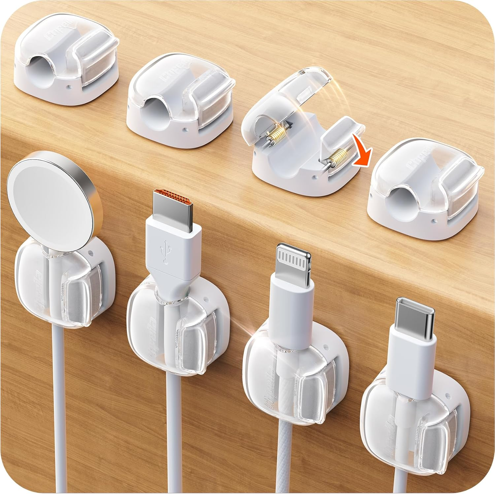

Minimalist white battlestation
Clean lines, zero cable clutter, one consistent white palette — ten pieces, every one of them linked, so you can build the whole desk in one sitting.
Updated June 2026 · 10 pieces to shop

The minimalist battlestation is the other side of the cozy gaming coin. Where the pastel and pink setups lean into color, this one is all about discipline: a single white finish across every piece, cables routed out of sight, nothing competing for attention. I rebuilt this guide from scratch with ten pieces that actually pull that off — a reclining chair with a footrest, a curved white monitor, a gasket-mounted keyboard, and enough cable management that the back of the desk looks as good as the front.
Everything in this setup
- 01ChairWhite reclining gaming chair with footrest
- 02DisplayCRUA 27" curved white monitor
- 03KeyboardIROK FE87 V2 mechanical keyboard
- 04MouseDAREU wireless mouse — white
- 05HeadsetHyperX Cloud III — white
- 06Desk matYSAGi leather desk pad — white
- 07LightingQuntis monitor light bar pro
- 08AccessoryHeadphone stand with wireless charger
- 09AccessoryAdjustable phone stand — silver
- 10AccessoryWhite cable clips (8-pack)

White reclining gaming chair with footrest
The anchor piece of any minimalist setup has to disappear into the room instead of dominating it. This all-white reclining chair comes with a built-in footrest, a lumbar pillow, a headrest and even a massage function — comfort for the long sessions, without a single color breaking the palette.
A chair this size has to earn its visual weight. The clean white shell, pocket-spring cushion and full recline mean it photographs well from every angle and still holds up through eight-hour days.
Check price on Amazon ↗
CRUA 27" curved white monitor
A curved white monitor is the single easiest way to make a desk feel designed instead of assembled. The CRUA 27" runs a 1800R curve, full HD 1080p at 100Hz, 120% sRGB and a three-sided frameless build — the white chassis sits quietly in the setup instead of fighting with it.
Genuinely white monitors are hard to find — most ship in an off-white beige that clashes the moment you put it next to anything else white. This one matches, and the blue light filter makes long sessions easier on the eyes.
Check price on Amazon ↗
IROK FE87 V2 mechanical keyboard
A TKL layout keeps the desk surface open, which matters twice as much when empty space is the whole point. The FE87 V2 runs a gasket-mounted structure with hot-swappable switches and SODC, so it sounds and feels considered, not just white for the sake of it.
Most white keyboards feel hollow under the fingers. The gasket mount here gives it a cushioned, quieter typing feel that actually matches the calm look instead of undercutting it.
Check price on Amazon ↗
DAREU wireless mouse — white
Built for small to medium hands, finished in matte white, with six programmable buttons and genuinely silent clicks. It pairs across three devices at once — USB, two Bluetooth connections — so it never has to bring a cable back into a desk that worked hard to lose them.
Silent clicks matter more than people expect once the rest of the setup is this quiet. USB-C rechargeable means no battery swaps interrupting the look either.
Check price on Amazon ↗
HyperX Cloud III — white
The Cloud III in white keeps HyperX's signature comfort — memory foam ear cushions, a durable steel-reinforced frame — without the black plastic that usually breaks a clean palette. Angled 53mm drivers, a detachable ultra-clear mic, and USB-C, USB-A and 3.5mm connections cover every device.
A headset is the one piece of gear you actually wear, so comfort isn't optional. HyperX's build quality is well proven, and the white finish is a real white rather than the off-white plastic that yellows over time.
Check price on Amazon ↗
YSAGi leather desk pad — white (31.5" × 15.8")
A full desk-width white PU leather mat is what makes the rest of this setup look intentional instead of pieced together. It's waterproof, wipes clean in seconds, and gives the keyboard, mouse and phone stand one continuous surface to sit on.
Skip the mouse-pad-sized mat — full coverage is what reads as "designed" in every overhead photo. This one's large enough to anchor a monitor, keyboard and phone stand all at once.
Check price on Amazon ↗
Quntis monitor light bar pro — white
The same light bar that shows up across our other setups, because nothing else gets the balance right: warm, glare-free light cast down onto the desk, stepless dimming, auto-brightness, and a finish that matches the monitor instead of standing out from it.
Bias lighting genuinely cuts eye strain on long sessions, and the auto-dimming means you set it once and forget it. The cleanest comfort upgrade on this list.
Check price on Amazon ↗
Headphone stand with wireless charger
Two problems solved in one object: the headset gets a proper home instead of living flat on the desk, and the base doubles as a wireless charging pad for your phone. All-aluminum stand, white base, wall adapter included.
A headset left lying on the desk is the fastest way to make a tidy setup look messy. This gives it somewhere to live and quietly charges your phone at the same time — no extra cable on the desk.
Check price on Amazon ↗
Adjustable phone stand — silver
An adjustable aluminum stand that holds the phone at any angle for video calls, Face ID or just keeping notifications visible without picking it up. It folds flat when you don't need it.
Aluminum doesn't wobble or scratch the phone the way plastic stands do, and the brushed silver finish reads as a considered accessory rather than desk clutter.
Check price on Amazon ↗
White cable clips — 8-pack
Eight clear-and-white cable clips with a one-second lock and a strong adhesive base, sized for everything from MagSafe pucks to USB-C and Lightning cables. They route everything along the back edge of the desk where it disappears completely.
A minimalist desk lives and dies by what you can't see. Five minutes with these clips is the difference between a desk that looks staged and one that's actually styled.
Check price on Amazon ↗